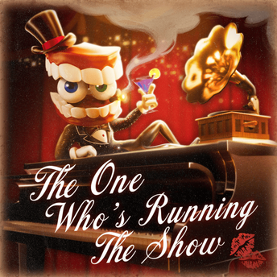

가수: 알렉스 로숑
작곡: 구스웍스
편곡 & 공동 프로듀서: 조쉬 플롯너
작사: 데이브 캡디벨
뮤직비디오 연출: 잭 & 마이카 프레시아도
It's news to me that it's news to you.
To which degree, who answers to who?
We could go on and on, but in the end, who are we kidding?
My divinity is past infinity. Am I getting through?
Seems our regime has plummeted itself.
Don't need to scream if you ain't got mouth.
Why bite the hand that feeds when it's the only hand you're getting?
It's time you see that this great marquee is the only place you're ever going to be.
So strap on in and get on the chin. And don't forget who's running the show.
Now look at this
absolute bliss!
Oh, what a shock!
Watch where you walk!
I'm the host. I run the place.
Caine, That is my name.
Not enthused?
Just feeling used?
Oh, what a goddamn shame
Congratulations, all of my friends
Public relations are getting a cleanse
Put on your Sunday best because I’m nowhere close to quitting